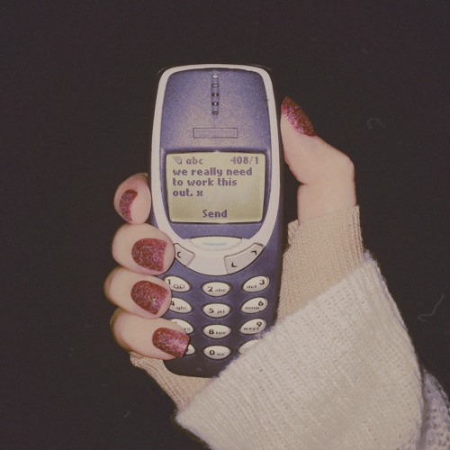

The False Alignment Trap
Most change efforts don't fail on execution. They fail because the people at the top believe they agree on why, what, and how to change — when they quietly don't. Here's how false alignment takes hold, what it costs you, and how to reach the kind of agreement that actually holds.
By Qava Team

The Problem Isn't Execution
Almost everyone who has lived through a transformation knows the feeling. A big change is announced with real conviction. There's a kick-off, a deck, a set of targets, maybe a memorable name. And then, somewhere over the following months, the energy leaks out of it. Deadlines slip. The teams doing the actual work seem busy but strangely stuck. Eventually the whole thing is quietly rebranded, absorbed into "business as usual," or simply not mentioned again.
This isn't rare. It's the norm.
When Michael Hammer helped launch the business-process-reengineering movement in the early nineties, even he ended up conceding that somewhere between half and seventy per cent of the organisations attempting it never achieved the results they set out to get. More recent work tells the same story from a different angle. Boston Consulting Group has spent roughly two decades studying nearly two thousand public companies, and found that more than seven in ten fail to beat their industry peers over both the year and the five years following a downturn.
Sit with that for a moment. Over the same stretch of time we digitised the global economy, sequenced the human genome, and put cars on the road that drive themselves. What we did not get meaningfully better at is the oldest problem in business: getting a group of people to do something differently, together.
There's no single reason for that. But when you trace enough of these failures back to their source, an uncomfortable pattern shows up. The breakdown usually starts at the very top — long before the strategy reaches the people expected to deliver it. And it hides inside a word that sounds like success.
Everyone said they were aligned.
Alignment Is Not Agreement
Every change worth doing has to answer three plain questions. Why are we changing? What exactly are we changing — and, just as importantly, what are we deliberately leaving alone? And how is the change going to happen?
Leadership teams love to believe they've settled these. What they've often actually done is talk around them once, nod, and move on. And here's the trap: they behave as though they are far more in agreement than they really are.
It helps to be precise about language. "Alignment" is a spatial word. It describes objects arranged in a line, or pointing roughly the same direction. When executives say "we're aligned," what they usually mean is something much weaker: we're not actively in each other's way, or we've discussed this and can live with the broad shape of it.
That is a low bar. And a low bar is fine for most decisions. But a transformation is not most decisions. It asks leaders to collaborate intensely, to trade off their own priorities against each other, to make hard calls in public, and to say the same thing to their own teams even when they'd have phrased it differently. Alignment doesn't carry that weight. It bends under pressure and then breaks — which is exactly why it deserves to be called false.
The alternative is harder and much more valuable. Call it true agreement: a detailed, explicit, spoken-out-loud compact about what will be done, by whom, in what order, and at what cost. Teams that build that can make real progress and hold one another to it. Teams that settle for alignment discover, usually too late, that they were each running a slightly different plan.
I've watched this play out in the simplest possible way. Ask a leadership team, individually and in writing, to describe how the company will actually be different once the change is done. Then compare the answers. One person describes a bigger, more complex version of today. Another describes standing on their own two feet without a parent company. A third describes new markets, new assets, new people. Same strategy. Same meetings. Three genuinely different companies in three heads. Nobody had lied. Nobody had even disagreed out loud. They just never got specific enough to notice they weren't holding the same picture.
How Smart People Fool Themselves
The most reasonable question here is also the most unsettling: how does a room full of high-performing, highly paid executives fail to notice they don't agree?
Part of the answer is a well-documented quirk of how we're wired. Psychologists call it the false consensus effect — first described by Lee Ross and his colleagues at Stanford — and it's the simple human tendency to assume other people see the world roughly the way we do. If you love an idea, you quietly overestimate how many people around the table love it too, and for the same reasons you do. So when a leader champions a new initiative, they don't just hope their colleagues agree. They assume it, and then interpret polite nods as proof.
The false consensus effect explains why teams can drift for months without realising it. Picture two executives who both want to improve margin. One intends to raise prices; the other intends to cut unit costs. As long as the conversation stays at the altitude of "improving margin," they will feel completely aligned — and they will be pulling in opposite directions the entire time. The disagreement doesn't surface until someone forces the discussion down to specifics. Until then, both sincerely believe they're on the same page.
This is the avoidable kind of false alignment, and the lesson is almost embarrassingly simple: get more specific. "Double revenue" and "save five hundred million" are not agreements — they're slogans. Real agreement means breaking that number down across the actual levers and business units, naming the trade-offs and consequences, and putting a rough timeline on when the value shows up. Only at that level of detail can you tell whether you actually agree, or just share a vocabulary.
The Three Ways It Takes Hold
False alignment tends to arrive in one of three forms. It's worth learning to recognise each, because they need different responses.
1. They don't realise they disagree
This is the version we've just described — the false consensus effect doing its quiet work. The conversation never got specific enough for the disagreement to become visible, so everyone genuinely believes it's settled. It feels like harmony. It's actually just fog. The fix is depth: keep pushing the discussion down until there's something concrete enough to disagree about.
2. They pretend to agree
This one is more corrosive, because the disagreement is already in the room — people simply won't name it. I've sat in meetings where a CEO went round the table asking each person, out loud, whether they agreed. One said they backed the first proposal but not the second. Another said they were "partly there." A third gave a careful non-answer. And then the most senior person in the room summarised all of that as "so we're conceptually aligned," and the meeting ended. Everyone walked out. Nobody had actually agreed, and everybody knew it.
Why do capable adults do this? Because we are astonishingly bad at predicting how unpleasant disagreement will be. Research into what's sometimes called affective forecasting shows we consistently expect conflict — especially with people who see things differently — to be far more painful and far more hostile than it turns out to be in practice. We brace for a fight, so we avoid the conversation, and paper over the gap with a comfortable phrase. The phrase feels like progress. It's the opposite.
One team I know of got so tired of the word "alignment" being used to smother real debate that they banned it outright — a small fine for anyone caught saying it in a meeting, with the proceeds going towards a celebration once they actually hit their goal. It sounds like a gimmick. It worked, because it forced people to say what they actually meant.
3. They put off resolving it
The third version is the most seductive, because it's dressed up as decisiveness. "We don't have time to keep debating." "Something is better than nothing." "We'll sort out the details once we're moving." "It'll all be clearer once the programme is up and running."
Here the disagreement is known and even openly acknowledged — it's just deferred. And in many parts of life, that instinct is correct. If you want to get fit, you shouldn't spend three months designing the perfect workout; you should just start moving. But a transformation is precisely where that principle breaks down. A plan built on vague or contradictory foundations doesn't reduce confusion, it manufactures it — and untangling that later costs far more than the debate you skipped would have. Worse, teams rarely circle back. They get busy executing and firefighting, the disagreement quietly compounds, and the "we'll deal with it in a couple of weeks" debt ends up unpaid for years.
What It Actually Costs You
When the top of the house hasn't truly agreed on why, what, and how, the people underneath inherit the confusion — and it shows up in one of three ways. You'd never ask a factory to build a car without telling them the model. Yet that's effectively what false alignment does to a change team.
Paralysis — plenty of talk, no action
Caught between leaders who each want something slightly different, the team responds by doing nothing definitive at all. Meetings fill with focus-area lists, proposed "strategic reviews" scheduled months out, and elaborate prioritisation frameworks designed to reconcile the irreconcilable. They please no one and move nothing. Ask around and you'll hear the same verdict, in various forms: no one is steering the ship.
Hyperactivity — plenty of action, no progress
The opposite failure looks like enormous energy. Rather than choose, the team tries to satisfy every executive at once, spinning up a sprawling list of initiatives — many of which exist mainly to keep a particular leader happy. "We can't cut that one, that one's for Joan." Because the funding and attention are spread across everything, each initiative is shallow, under-resourced, and quietly doomed.
Tunnel vision — plenty of progress, on the wrong thing
The most dangerous outcome is a team that executes brilliantly against a narrow, incomplete reading of the strategy. Say the leaders wanted to improve the customer experience and take out cost, but never nailed down the targets or the trade-off between them. Left to interpret, the team decides it's really a cost story — and does such a good job of cutting that it starts damaging the very experience the leaders were trying to protect.
How to Reach True Agreement
So how do you fight your own instinct to assume everyone thinks like you, start the conversations you'd rather avoid, and convince busy colleagues to spend real time resolving their differences before charging ahead? The teams that do this well tend to follow a version of the same five steps. It's useful to watch it work in practice, so I'll thread through the turnaround of the Danish jewellery group Pandora, led by Alexander Lacik.
Pandora's back story is instructive. In August 2011 the company shed around sixty-five per cent of its market value in a single day, and cycled through several chief executives over the years that followed. By early 2019 it had announced an ambitious transformation — christened Programme Now — spanning a dozen or so workstreams: a roughly four-hundred-million-dollar cost programme with every saving reinvested, a global reorganisation, a brand relaunch and store revamp, fewer value-destroying promotions, an overhaul of digital and loyalty, and a shift from loose product groups to a handful of consumer collections. When Lacik arrived as CEO in April 2019, the pieces looked broadly right on paper. What was missing was focus.
1. Set clear parameters
Before any real debate, decide how the decision will actually get made. Which questions are on the table? Who is in which conversation? Does the programme move only when everyone explicitly agrees, or does the CEO ultimately decide — and if so, what does that mean for anyone who disagrees? Lacik's first move was blunt: he counted forty-six priorities sitting on the management team alone, and took them off to a two-day off-site with a single instruction — nobody leaves until we've cut this list down to twelve. He didn't dictate which twelve. That was the point of the room.
2. Provoke an early exchange
Unanimous enthusiasm early on is as likely to be a warning sign as a good one. What you want isn't consensus — it's well-informed decisions from accountable people who feel genuinely heard, even when they don't get their way. So make the case explicitly, in writing, and then ask people to record their honest first reactions privately: what they clearly support, what they clearly reject, and where they're unsure. Writing first, before anyone speaks, is what keeps groupthink out of the room.
And you have to actively invite the dissent, repeatedly, because people are wired to give leaders what they think leaders want. A small reframe helps enormously: instead of "what do you think?", ask "what could go wrong with this?" — which signals that disagreement is the job, not a betrayal. At that Pandora off-site, Lacik described it as an open boxing match. Every one of the forty-six priorities was put up, its owner made to defend it in front of the group, and the team then voted, out loud, on what stayed and what died.
3. Have a proper debate
Give people room to actually understand the change on their own terms, and to work out what it will demand of them personally. Much of this happens best outside the big meeting — in unglamorous one-on-ones that feel slow and inefficient, because they are, in effect, a negotiation about where each leader will draw a red line and where they'll give ground. It was through this kind of work that Lacik got his team to agree on what Pandora was really for: not jewellery for its own sake, but commemoration — marking a birthday, a first job, a milestone that mattered. Jewellery with meaning. Everything else flowed from that.
Be honest, throughout, about how much agreement you're actually seeing. Remember the false consensus effect and get deep enough that there's something real to argue over. Almost no one objects to "finding savings in the budget." Plenty object to finding savings in their budget. If you're not there yet, say so plainly — "we're not agreed yet" beats a comforting "I think we're speaking the same language."
4. Come to a formal verdict
When the moment is right, bring the group together for an explicit decision — and ask each person, individually, for their agreement rather than reading it off the room. Individual assent makes quiet resistance much harder, especially from strong performers who assume they can slip through. Write down what's been agreed in plain language, and mark it with some kind of ritual; having people literally sign their names at the bottom of the document does more than it should. Then acknowledge the concerns that remain and commit to returning to them, because no room ever agrees on everything at once. Pandora sealed it by adopting a single, demanding success metric — like-for-like revenue driven only by genuine end-customer demand, from stores open at least a year, plus online. In choosing that number, the team was committing to the hard work of actually improving its relationship with shoppers, not just shipping stock to retailers.
5. Send one message
Finally, tell everyone the same thing at the same time. If your executives are being pinged mid-meeting by their teams asking "what did we decide?", you've already lost control of the narrative — each department will get its own slightly warped version, and relying on every leader to cascade it faithfully is a fantasy. Broadcast the decision once, simply, to everyone who needs it. As Lacik put it, when you're talking to tens of thousands of people across a supply chain, simplicity isn't a nicety — if they don't understand it, they can't execute it. He compressed the entire strategy into two words for the stores: Moments First. He even had some shops strip their windows of anything off-brand and fill them with the bracelets and charms the new direction was built around, and set daily bracelet targets to leave no doubt about what mattered.
When You Still Can't Agree
Sometimes you do all of this and someone still won't come along. You have four honest options.
Disagree again. This is the first and cheapest. Getting real agreement on something this complex takes persistence, and leaders give up far too early — writing someone off as immovable when they were actually one small concession away from yes.
Subtract and defer. If you've genuinely exhausted the debate, there's no shame in dropping the parts you can't agree on. A smaller change the whole team backs usually beats a bigger one it doesn't — and once the sceptics see the scaled-back version work, they often come round to what they first resisted.
Offer a graceful exit. If a leader holds a genuine minority position and neither persuasion nor subtraction resolves it, sometimes the kindest and clearest path is an attractive way out — an early retirement, or a dignified transition.
Proceed with a plan. Occasionally events force your hand — a board sets a sale date, and a cost programme has to start now. If that happens, be clear-eyed: every day you run without true agreement is a day of accumulating risk. Closing that gap should be your top priority even as the work begins, not an afterthought.
The Time You Think You Don't Have
The instinct to skip the hard conversation and "just start" is understandable, especially under pressure. But it's almost always a false economy. Programmes launched on vague or conflicting premises don't move faster — they stall in execution and quietly consume far more time and goodwill than the debate would ever have cost up front.
The uncomfortable truth is that there is usually more time to get this right than leaders believe, even when it doesn't feel that way. And teams that invest it — that get specific, invite the disagreement, argue it out properly, decide explicitly, and say one thing to everyone — buy themselves the ability to accelerate later.
Agreement isn't the thing that slows a transformation down. The absence of it is.
Change is a people problem before it's a plan.
The right people, genuinely agreed on the same goal, is where every real transformation starts.
Find them with Qava.